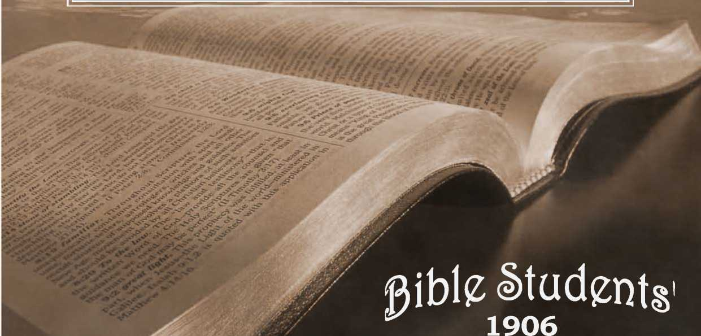

No. 75—Spiritism is Demonism!
ENTERED AT THE POST OFFICE, SIX CENTS
PRIMARY STUDIES IN THE SCRIPTURES ALLEGHENY, PA,
AS SECOND-CLASS MATTER PER YEAR
; ^.x- ■ . . . ..... i
------:----— K A
FOR twenty-five years we have sought to forewarn /God’s people and the public against the influence of the fallen angels, the wicked spirits in righ positions. (Eph. 6:12.) The pamphlet we publish treating this subject1 has had a wide circulation. We have been much encouraged by the many reports received, showing that its influence has been widely felt for good, not only among the Lord’s people, restraining them from “curious and dangerous investigations,” but also amongst those who had been partially ensnared by the “wiles” of these adversaries—some of them “mediums.”
We remind our readers afresh that the Scriptures expressly show that the fallen spirits would be held under restraint for a. long time, and that those restraints would gradually be relaxed in the closing of this Gospel Age, in the lapping of the Millennial Age. The record, is that they were “restrained [in Tartarus, our atmosphere] in lasting chains of darkness unto the judgment of the great day.” (Jude 6; 2- Pet. 2:4) As now the “great day” nears, it is not surprising to watchers to note that the chains are being gradually loosened, and that these “wicked spirits” have greater liberties than ever before.
“be NOT HIGH-MINDED, BUT PEAR.”
There is still danger to those who “don’t believe in spirits,” and who regard as superstitious the Bible narratives of how our Lord and the Apostle cast out demons, and how all wizards, witches, necromancers and others who proposed to hold intercourse with the dead were strictly prohibited in Israel. There is more danger to the self-confident, who “dare investigate anything,” and who boast “a mind of their own,” than of the humbler ones who say “let us fear to tamper with what God has forbidden.” To many of the boldly selfconfident curiosity is the demon trap. Before they are aware of it they are snared. The beginning of the trap is a bait to curiosity—a visit to a “medium,” “a seance” with friends, or a “planchette” at a neighbor’s home. . ’
The Scriptures forewarn us that we are no matches intellectually for the wicked spirits, and need to give heed to the protections afforded us in the counsels of the Lord’s Word. In the end
of the Jewish age many were afflicted with evil spirits, and a considerable part of our Lord’s work and that o'f the apostles was referred to by the latter when reporting to our Lord—“Even the demons were subject unto us in thy name.” (Luke 10:17.) So .prominent is this matter in the four gospels that they contain forty-two references to these demons-—mistranslated “devils” in our Common Version. - '
THESE ARE THE “STRONG DELUSIONS.” •
The Apostle points out that in the end of this age the Lord will “send,” or permit to come upon Christendom, “strong delusion,” that they may believe a lie,-—that they all may be condemned.” (2 Thess. 2:11, 12.) Thank God we see clearly that they will not be condemned to everlasting torture. Oh, no! That blasphemous misrepresentation of G-od’s Word is one of the devices of these “wicked spirits,” by which they would drive men away from God, by which they w’ould blind them to his real character. But we are now in the “harvest,” and the wheat must be separated from the tares, and these “strong delusions” will be permitted to demonstrate who have loved and obeyed the Lord’s counsel and who, not doing this, are to be adjudged unworthy of the high rewards soon to be given to the “overcomers.”
The context shows this, declaring in so many ■words that the “delusions” will ensnare them because ‘ ‘ they received not the truth in the love of it.” The “truth” is that the dead are dead, and cannot re-live except by divine power exercised for their awakening from this death-sleep. This plain truth, so abundantly set forth in the Scriptures, is not relished by any except the truth-hungry. Others tell us that they' do not like to believe thus;—that they prefer to think of the dead as not being dead, but more alive than ever. Rejecting the plain truth as God presented it, and preferring Satan’s lie, “Ye shall not surely die” (Genesis 314), these are easy marks for the demons who are constantly striving to perpetuate the lie which deceived Mother Eve in Eden. They will now be permitted to personate the dead so successfully as to be a “ strong delusion,” which “ if it were possible [if the Lord did not protect them by the ‘armor of God’] would deceive the very elect.’’— Matt. 24:24.
HYPNOSIS, TELEPATHY,--MODERN DEMONISM.
Spiritism cunningly feigns, for a time, that its manifestations are the exercise of human powers. Thus it gains access to the hearts of men and women who dread demonism instinctively. Gradually, however it comes to be conceded that the spirits are at the bottom of these powers, which are at least partially “occult.” For years we have been almost alone in opposing hypnotism, telepathy, etc., as Spiritism in a new form; but now no less a celebrity than Professor J. H. Hyslop, formerly “Teacher of Logic and Ethics” in Columbia University, and now a leading light in The American Society for Psychical Research, seems to concede that spirits have to Ho with such matters; —not demons, but in his supposition “spirits of dead humans.”
Prof. Hyslop is quoted in the New York American- thus:— -
i .“Telepathy is not a matter of thought waves. The solution is so simple as to be astounding. Messages are carried from mind to mind by the spirits. Mediumistic qualities are necessary, but, possessed of these and able to get in touch with the spirit world, telepathy should become as easy of accomplishment as the telegraphing of a message with wires.
L ‘‘None but scientists should tamper with the weird phenomena of nature represented by telepathy,” said Dr. Hyslop. “Every investigation should be made sanely and every experiment approached with a mind clear, impartial and prepared to weigh and balance every fact as carefully as though it were a precious gem.
“Our experiments in telepathy I regard as convincing if not wholly satisfactory in number or in the ability to repeat them at will.
“In these experiments v/e used Mrs. Piper, .who was sent to England in care of the British society. She was allowed to come into contact with no one not in league with the persons making the experiments. We began our experiments in long distance telepathy in the hope of eventually getting a message across the Atlantic, but failed time after time.
“ Finally we scored a success. It was as remarkable as it was unexpected. The message was sent across the ocean in a way to demonstrate perfectly the possibilities of long distance telepathy. The experiment was conducted in a manner to eliminate any trace of fraud or deception. It was sent in English and delivered in Latin.”
COMMUNICATION WITH THE DEAD
In an article over his own signature in “The World To-day,” Prof. Hyslop says:—
“ That there would be great difficulties in communicating, if spirits actually exist, would naturally be taken for granted by intelligent people. The silence of so many discarnate spirits through the ages, if they exist, would be sufficient proof of that fact, as well as what we know of the difficulty of communications between living people when they have no common language as a means of it. But there happen to be additional reasons for this difficulty, and they should be mentioned in order that the layman (I ought not to mention it to the scientist) may see and appreciate the reasons why the communications take the form which they show. The first of these is the abnormal mental and physical condition of the medium, specifically to illustrate, as in the case of Mrs. Piper.- But this is not the chief reason that the communications are trivial and confused, or lacking in the kind of information wanted, The reason for these characteristics is deeper still. It-is that the communicator is himself in an abnormal mental condition while communicating. It may be compared to a delirious dream, or to certain types of secondary personality in the living, or even to the-trance of Mrs. Piper, in some of its aspects.”.
REV. I. K. FUNK, D.D,, “TOUCHED”
Rev. I. K. Funk, D. D., of New York City, the widely known Methodist minister, has had some thrilling experiences with spirits and has published them to the world, asserting, however, what even Spiritualists will admit, that some of the so-called manifestations are frauds; that others are by deceiving or “lying spirits.” His investigations, like those of Prof. Hyslop, show the trend of our times, and give a hint of what we may expect when shortly the whole world will turn to the investigation of Spiritism as “the only proof that the dead are not-dead.”
REV. R. HEBER NEWTON’s VIEWS
Discussing psychical science in an address to-night before the American Institute for Scientific Research in the home of C. Griswold Bourne, the Rev. R. Heber Newton made the assertion that the spirits of the dead, communicate with the living; that telepathy is a power possessed by many men and women, and that clairvoyance is an established scientific fact. Said he in part: .
“Clairvoyance was nothing but a. will o’ the wisp, but it is now a confessed power of certain organizations. Mollie Fancher, over in Brooklyn, has proved stronger than the incredulity of our savants. The belief in the existence of unseen spirits and of their power of communication with us in the flesh is one of the oldest, most widespread and most insistent beliefs of man, and.-it has revived strangely in our day.
“For the first time in the history of man these powershave been scientifically investigated in our day. Already the result is that a considerable number of eminent men of science have had the courage to avow that, after allowing for illusion, fraud and every possible: hypothesis of interpretation, they have been driven up to the ultimate solution of the problem—the belief in the actual communication of the spirits of those whom, we call dead with the living.
“Anyone who walks with his eyes open, ready to-hear what men have to tell, will find stories pouring in. upon him from men whom he cannot mistrust as liars,, and whom he knows to be sane and sensible, which, will stagger him. These experiences are not at all confined to the seance and the medium. Their most-impressive forms occur in the privacy of the home without a professional medium present.”—PittsburG-Gazette.
The standing of Dr. Newton in the Protestant Episcopal Church will carry a weight of influence, and is being published and discussed in every quarter.
EX-SUDGE A. S. DAILEY EXPLAINS
Great has been the interest aroused among those who-are avowed Spiritualists by the statements of Dr. George Savage and Dr. Newton.. The real enthusiasm, has been among those who for years have acknowledged their belief in clairvoyance, claira.udience and telepathy between the dead and the living, although the word “dead” is one the true Spiritualist never uses. One man who for a quarter century has proclaimed himself a Spiritualist is former Judge Abram S. Dailey, of Brooklyn, Judge Dailey said he had read with interest the published statements by Dr. Newton, and felt that by him Spiritualism and Spiritualists had received recognition which would do more to gain for them and their creed the respect of the world at large than anything that had taken place since the founding of the Society for Psychical Research 20 years ago.
“ Let me tell you a story which has never been given to the world,” said Mr. Dailey. “I know that many will scoff at it, but I know it to be true, for it was told me by the man whom it chiefly concerns. It is how the Leland- Stanford, Junior, University came to be founded. We all know it was built in memory of Leland Stanford’s only son, but that is not all. It was known to me for many years that Mr. Stanford and his wife were interested in Spiritualism. They at times consulted mediums, not believing much of what they learned. In 1883, a year before their son died, they were warned by a noted psychic that if they permitted their son to remain in Florence, Italy, where he was studying, he would die. The warning was not heeded, and in May, 1884, he died. The parents for a while were numbed with grief. Then came to them the warning, and once more they engaged the services of the psychic.'
“Mr. Stanford told me himself that through the medium they were able to get in communication with the son who had gone ‘ over the border.’ I myself have been with them when a seance has taken place, and in the psychic language I have heard that boy talk with his parents. At one of these seances Mr. Stanford told me the spirit of their son came to him and made the suggestion that the great property, valued at 820,000,000, which would have come to him be given to the founding of a place of learning. A year later, on the first anniversary of the boy’s death, the corner stone of that great university was laid.
“When the university was opened, on October 1, 1891, the words of the founders were: “The idea of the university came directly and largely from our son and only child, Leland, and we hold the belief that had he been spared to advise as. to the disposition of our estate he would have desired the devotion of a large portion thereof to this purpose.
HELPED CONVINCE REV. NEWTON, D.D.
“I may say without breach of confidence,” continued Mr. Dailey, “that this story is known to Dr. Heber Newton, and is believed by him. "When he resigned his Church in this city he went at once to Mrs. Stanford and has been with her constantly since. It is my belief this great truth that came to the founders of Stanford university was largely responsible in settling for all time any doubts that Mr. Newton had.
“That Spiritualism is gaining ground every day I know well. Only a month ago two clergymen in Brooklyn came to me late at night and said they represented 13 other pastors who secretly had been making an investigation of Spiritualism, but that they had got out of their depth in the mysteries and wonders of it. Would I help them? That was not the first time such a thing had happened. Under the surface there is a great quest of knowledge. People to-day are afraid to be known as Spiritualists, but there will come a day when a man will be afraid not to be known as one.”— Pittsburg Times.
SUGGESTIVE FACTS NOTED
It does not surprise us that Spiritism, like Christian Science, is aiming for the influential. Whatever else the fallen angels may be they are “wily,” cunning. The Lord’s people, on the contrary, number “not many wise, not many great, not
many learned, not many rich, not many noble, but chiefly the poor of this world, rich in faith',”— Jas. 2:5. . _
A lady who has but recently come into the light of Present Truth, and who previously was a Spiritist, tells of how she had developed the “clair-audient ear,” or the powrnr of hearing the spirits when others heard nothing. (And, by the way, all should avoid everything of this kind as they would avoid a plague: they should, if approached thus, at once turn their hearts to the Lord in prayer for aid to resist the intrusion). This woman’s relatives have been interested for some years in Present Truth, and pointed out to her that her communings were not with dead friends but with the fallen angels, “demons,” and finally got her to the point of reading Millennial Dawn. This displeased the “spirits” who almost for a time prevented her study by an incessant opposition, such as “Don’t read that,” “That’s not true,” etc., etc. Gradually she asserted her will, calling on the Lord for help, and we understand that now she is quite free from their intrusions.
Another case which recently came to our attention, is that of a boy of 19 years, in Eastern Pennsylvania, who is terribly oppressed by demons. One of the brethren hearing of the case called to see him, taking a copy of the “Spiritism”' pamphlet and a copy of Zion’s Watch Tower. The presence of the papers so aggravated the boy that they had to be removed before the brother could, talk to the possessed one. The spirits having him under their control nearly set him wild until the books were removed. “The darkness hateth the light.” We do not doubt that these evil spirits wrould do injury to the servants of the Truth if permitted. Evidently they are under some restraint as respects the Lord’s people. Later on they may be permitted to operate through others, as Satan entered into Judas before the betrayal.
OFFER REFUSED-VOICE LOST.
A few years ago a lady living in Canada, a Methodist, prominent amongst that people as a choir singer, became interested in Spiritism and developed the clairaudient ear. She suspected no harm until, by and by, the spirits proposed that if she would yield herself entirely to their control they would develop her voice and make her the best and most famous singer in the world. They knew of her ambition and used it as a bait to get her to surrender her will,—for apparently the human will is an impenetrable barrier.
The lady saw the bait, but 'was alarmed at the proposal, rightly reasoning that an evil being with an evil motive lay behind such a proposition, to sacrifice the most valuable gift of God—the wilt She spurned the offer, and thenceforth would have no communion with what she had learned to fear without understanding Not long afterward her fine voice began to fail and to-day she has none of it. But she has something infinitely better—she has the Truth. It was but a short time after she took her stand against Spiritism that the Lord graciously guided her to the “Dawns.” She chose the better part and rejoices in it. We are not able, however, to explain to her how or why the evil spirits were permitted to spoil her voice: possibly it was through their influence that formerly she was so : gifted, to the intent that it might be a snare for her. In any event, now that she understands who 'her tempters were, she is full of gratitude to God for her deliverance at any cost.
We clip the following from an exchange, “The Prophetic News.” It may serve to furthere m-phasize the foregoing.
I was induced to yield my hand to be controlled by a spirit, in consequence of reading what Mr. Stead wrote in the Revieiti of Reviews about Spirit-Writing. Thus was the first step taken on this forbidden yet fascinating course. I look back on that first step and remember that I never uttered, in the perplexity that filled my mind, a prayer to God. I should have at once sought the guidance of God. Before I thought of so doing, I was seized with the desire to seek this newly-found source of help. I fear much I am not alone in being foolishly misguided by the perusal of spiritualistic literature which is now being circulated far and wide in England.
The spirit that came and offered me his aid forbade my praying to God, assigning as a reason that I was now under special heavenly guidance, superseding the need of prayer, and that my heavenly inkeritamce was sure. That was strange counsel, and it was still stranger that I should have for one moment harbored it; but harbor it I did.
But, in addition, this messenger of Satan forbade my study of the Scriptures, for I had lately commenced a methodical reading thereof. The reason for this on the part of my evil counsellor was that the work Iwas now under so strong an obligation to execute, was so urgent that no time could be spared for other mental occupa-' tiom
Under the pretence of aiding me I was now “interviewed” by other spirits, who declared themselves to be the spirits of departed mortals. One assumed the character of what I might call ultra piety, and warned me from coming into association with and. under the influence of a certain minister of the Gospel residing in the neighborhood—one who would certainly have counselled me in my perplexed state of mind with wisdom—but against him my “interviewer” uttered base slanders. This spirit hindered me greatly by making long discourses
of an irrelevant character.
Another spirit declared himself to have been the former English ambassador to the nation of these persecuted Christians concerning whose distressing condition my heart was bleeding; and in language befitting a statesman he related his remarkable experience in the executing of his ambassadorial office. Then he desired my work to take a form which I subsequently found to be the worst under the circumstances, and that I should communicate it to an important public functionary. This was so opposed to my judgment that I could not yield assent to it.
After this the first spirit that came to me under the garb of a guardian angel declared that the spirit of my beloved mother had been permitted t® visit me for a few minutes, and that she entreated me to transmit a message to a relative residing abroad, and that, though I was ignorant of the purport of this message, she would herself guide my pen in writing it down. I took the pen into my hand, holding it loosely for her to guide it. A strong wish came upon me to see my mother’s form. Then, to my great astonishment, her portrait, was instantaneously and with consummate skill drawn, on the paper before me. I now watched with breathless interest the writing of the message. It was traced in her well-known (to me) handwriting. Only two words were written, but they were written three times. The words written, with tremulous haste and urgency were SAVE SOULS, and with a quick movement the pen was made to drop.
Such a message from such a source smote my heart with its deep solemnity. But I could not bring myself to send the message. I felt it would be wrong to send it. The relative for whom it was intended was already engaged in Christian mission work, and somehow I shrank from bringing on his mind the influence of a message from whence I hardly knew. I felt a total disinclination for any further communications from spirits, and I determined to receive no more from so dubious a source. But I was not to be so easily disentangled from this net into which in an evil moment 1 had deliberately placed my feet.
THE SPIRITS BETRAY THEIR EVIL INTENTION,
In disgust, and as if to take a plunge out of the vortex into Which I had been stealthily drawn, I threw into the fire the portrait of my mother and all the spirit-writing. I would not believe that the spirit of that dear Christian—my mother—was wandering on this earth in company with others who gave me such disastrous counsels, and failed in their promise to strengthen and aid me. I even came to the conclusion that these spirits had attempted an impersonation of that departed saint, and had written that solemn message in order to induce me to believe in their celestial character and the sanctity of their intentions, that i might be induced to follow their perilous injunctions.
To justify their proceedings they were apt in misquoting Scripture. There was a terrible mystery in this, and it filled me with dire forebodings. I then said to myself, half aloud. Can it be possible that there are evil spirits who have power to communicate with mortals and deceive them?”
A spirit answered “Yes,” and added that they themselves would now act evilly towards me and that I was in their power to be punished, since I had sought to obtain knowledge forbidden to mortals.
With this startling declaration they changed their character and conduct to me.
I now believed that I had committed a sin in consulting them.; but it ’was done in ignorance (it was a culpable ignorance, nevertheless) and with innocent intent. Surely I could trust in divine mercy to pardon me.
But the spirit answered my thought by declaring that the Divine mercy should not reach me, but that he would accuse me before the Recording Angel of this deadly sin—-intercourse with spirits,—and would call for immediate judgment'
Let it be remembered that these very spirits b ' their lying deception had induced me to cease from prayer and the study of Scripture, and had declared that my heavenly inheritance was sure. They left me to execute their threat.
A REMARKABLE VISION
Soon after this a remarkable vision appeared by the permitted instrumentality of these tormentors One night the wall at the end of my room seemed to vanish, and a large open space appeared. At one «ide was a dais with steps which appeared to lead up to an exalted throne, half hidden by clouds. Before the dais a number of celestial beings stood in a semi-circle, and, apart from the rest, at the foot of the dais, was a terrible dorm. I knew this was the prince of darkness, and I instinctively felt he was there as my 'accuser, and I seemed to have no advocate. This terrible vision at first seemed a confirmation of the spirit’s threat, yet there was one essential difference. It was not, as they haid, an avenging angel, but Satan, who accused me. I wanted to reflect on this vision and the new conditions environing me, but spirit voices continually interrupted me, so that I could neither think nor pray, but only repeat to myself some such words as “ O Lord, in Thee .have I trusted; let me never be confounded.”
I could not stop their verbal communications, their small but intensely clear voices followed me everywhere. _ _
The spirits told me that the torments of hell, in which I had not believed, awaited me, and that in the internal fires of the earth souls were in torment; and that the intensity of the punishment was proportioned to the guilt of the offender. They declared that I should know by experience the reality of eternal punishment that very night. The fact that I was still in mortal flesh would not impede them; there appeared to be some truth in their threat that they could cause death —or rather, the cessation of mortal existence, for they gave me an immediate and startling demonstration of their power in causing violent spasms and palpita-■ tions of the heart, while I'was quite calm in mind. Indeed my imperturbable calmness caused them to remark that I was one of the bravest of mortals, but they would yet overcome me with greater terrors. But I ultimately found, that they possessed no supreme power over the ‘‘King of Terrors.” They then left .me, and in the darkness and the silence of the night I waited, expectantly, believing that a terrible ordeal awaited me, for I knew that my enemies were powerful and malignant.
The wall of my room again seemed to disappear, and I was conscious that a spirit had entered and touched me, and a voice declared that he who had entered was an administrator of justice in the infernal regions. He demanded of me if I knew
WHY HE HAD BEEN SUMMONED TO ME.
I replied that I only knew that my enemies accused me, and that if he was the servant of God I desired him to tell me what it was-the will of God that I should now do, for I desired only to know, and do that will.
He answered in'some such words as these: ‘‘You are free; you cannot come within my province. I only punish those who will not obey God, and now I leave you.”
I was inexpressibly thankful to be delivered from such threatening peril, and that a powerful spirit had acknowledged that Divine Power overruled in hell, and that he acted in subservience to it.
All these spiritualistic manifestations were far from being the phantasmagoria of dream or fancy—they too evidently belonged to the stern and abiding realities of life. They were manifestations of that great, and potent, and eternal realm of spiritual power which mortal vision may not yet behold. Throughout this ordeal I was calm, and possessed that intensification of consciousness that is aroused by tragic circumstances.
I resolved that as I had encountered these unique and tragic conditions not from personal needs or seeking personal aims, that the result of this experience should also have a, wider range of influence.
I had more to learn and to endure. I was even to learn that my deliverance from the power of demons, like my faith, was of an imperfect character.
The remainder of the night I passed in peace. In the morning I recommenced the study of Holy Scripture; it became to me the most important concern of my life.
But to my great distress the evil spirits immediately returned to me with ceaseless interruptions to prevent my study. They determined to keep me from the knowledge of a full deliverance.
They compelled me to listen to their account of an insurrection on earth against Divine power which they had long been planning, but which was ere long to be carried out. They asserted that their mighty potentate and chief had obtained the vicegerency of earth, that he was the prince of this world, and that he would subjugate it as it never yet had been subjugated to his control, and that he would raise a storm of persecution against the followers of Christ. There was, in fact, to be a new putting forth of hellish influence upon the earth. *
I was compelled to hear from these spirits the unfolding of their diabolical scheme. They brought many proofs to substantiate the fact that their power on earth was already greatly increased and was increasing. The prospects, therefore, that seemed in store for the world overwhelmed me with dismay. They asserted that their great potentate—-the god of this world— had so subverted Christendom that at least the great ecclesiastical systems known as the Roman, Greek, and Anglican churches would more entirely be subservient to him. I was inclined to disbelieve their statements. I wished that they could have been disproved, but facts appeared to corroborate them. I then for the first time observed that the Church of Rome was gaining great power, and as for the Greek Church in Russia, it was then inflicting terrible persecutions on the true followers of Christ—Christians— who would not practise idolatry.
It was now made apparent to me that these spirits who had hypocritically proffered their aid for the persecuted Christians had themselves instigated idolatrous Churchmen to persecute them. I gathered further that the servants of the great potentate of darkness had sown error and discord freely in the other churches in Christendom, and that these would advance in error and in distance from God; that they had power to distract the attention and to deaden the perceptions of men who otherwise would
ARREST THE PROGRESS OF EVIL.
The spirits then spoke with sardonic triumph of their school of materialistic philosophy and their teaching on Cosmogony as opposing that of the Book of Genesis—a system that modern science has found so acceptable as appearing to fit in with what the bowels of the earth have displayed, but which entirely leaves out of its thoughts the operation of God’s hand in judgment at the fall of man, when not only man was morally and physically ruined, but that which was once pronounced ‘‘very good” fell with the first man, so that the ‘‘whole creation”—material and immaterial—groans for deliverance.
A spirit calling himself Lord Beaconsfield declared that he would aid me by dictating a work of fiction that should surpass all his earthly efforts and would produce a small fortune for me, and that I should thus obtain the reputation of being a great genius by simply acting as his amanuensis, and he added the more alluring temptation to me—that the spirits could and would confer on me such knowledge and power that I myself should be considered by the world as a brilliant writer, and
WIN FAME AND FORTUNE.
Perhaps his offer has been made to and accepted by some of our present writers of brilliant but pernicious fiction, especially those who have popularized and dignified Satan himself; some of whom I know are students of Occultism.
One spirit professed to be the originator of such systems as Theosophy and Gnosticism. They had previously declared that /‘thought-reading” was under their domination and effected by them. I gathered, generally, though it was not very clearly expressed, that mesmerism and hypnotism were likewise agencies in their hands.
I learned, too, that in the world’s pleasures Satan had set snares of almost infinite variety in order to keep men apart from God. Some persons he could degrade to the gross sins of the flesh, others of a more lofty and aspiring nature he could uplift by theosophy into a region of high and vain imagination.
I am aware that all this and much more I might write of what I gathered from the spirits was not necessarily true, but when compared with all the Scriptures have written as to the power of evil spirits to lead men astray, and when we see how marvellously successful the schemes for seducing the allegiance of the human mind from the authority of God and his Word has been, I am compelled to say that the spirits from the pit did not in their declarations contradict the experiences of the hour or the evidences of the Scriptures. I do not pretend to be able to understand why they supplied me with this information. It may be they knew not that I was eventually to be delivered out of their hands; but they wished, nevertheless, to glory in their mighty achievements in the world at large.
I was greatly impressed with the evident truth of much that I heard from them. O, how potent were and are these ‘‘world-rulers of this darkness!” These were spirits of what I may call a highly intellectual order, whose language seemed, unrivalled in its beauty of expression. I could not doubt their power to initiate mortals into any earthly knowfledge if God suffered it. It may be that this excellence of power and understanding in spirits exists, as a remnant, in their fallen state, of those lofty faculties which belonged to them ere they fell; but about such matters so little can be known that the less I conjecture the better.
THE TRIUMPH AND DEFEAT OF SATAN.
■ And now, as another confirmation of the ascendancy the spirits still had over me, they fulfilled their previous threat to call blaspheming demons to madden me. At their bidding these base spirits came and uttered horrible blasphemies until it seemed as if all hell was let loose upon me for a little while.
Then the spirits used one last awful device to overthrow me, and nearly succeeded.
In the midst of all these difficulties and dangers by which I was well-nigh overwhelmed, a commanding voice from an invisible spirit called me, saying words to this effect ‘‘That I had become so environed and besieged by evil spirits that there was no deliverance for me on earth, and that he—an angel of the Lord—• had descended from heaven to bear me this command from the Lord Jesus—that I must die by my own hand to escape my persecutors, and that my soul should then find rest in heaven.” I had so strong a desire for life that nothing less than a Divine command, as I believed it, could have induced me to take my life.
I did not question the words proceeding evidently from so 'high an authority, I could not conceive it possible •that the spirits would command mortals to die by using the sacred name of Christ. Yet it was the device of the devil and I fell into it.
I was perfectly calm in my mind and determined I would obey the Divine command, and trust in the Lord. Then, in the last prayer I thought to breathe on earth, I protested to the Almighty that I took my life believing I was acting at the bidding of the Lord Jesus-Christ. Thereupon I drank a poisonous draught and. quickly fell into a comatose state, but I did not awake in hell or in heaven, for I was allowed to recover, though only after much difficulty and suffering.
But whilst I was recovering, the inexorable voice repeated.the previous message, upon which I seized an instrument; the only instrument at hand was a --very small dagger, with which, having failed to cut my throat, I severed the temporal artery. Determined to make death swift and sure this time, I endeavored to cut another artery, and with the blood streaming from my head I fell to the ground insensible.
Again the spirits were foiled in. their intention. The noise of my fall instantly brought assistance, and I recovered.
My recovery was, I might almost say, a miracle. I am convinced that God did in a very remarkable way interpose His healing hand that I might be
PHYSICALLY HEALED.
But above all I was delivered from the tormenting presence and persecution of these demons. Christ, who when on earth healed those who were demonized, and ‘‘healed all that were oppressed of the devil,” mercifully healed me. He commanded them to leave me. I recognized the supreme need of a Redeemer. I believed His Word that ‘‘No man cometh unto the Father but by Me, and he that cometh unto Me I will in no wise cast out.” I know of the Blood of Jesus which cleanses from all sin—-of that ONE offering perfected on the Cross by which Christ has perfected His believing people. This blessed knowfledge dawned upon my soul despite all the efforts of the powers of darkness to prevent me from obtaining it.
I beg every reader of this to fly from Spiritualism. Do not play with tools such as ‘ ‘ Planchette, ” “ thoughtreading,” etc. I feel that my life has been preserved, that I might use this personal experience and knowledge of Satanic power that I have passed through, and witness against the snares of Spiritualism, deciare its Satanic nature, and the potency of Christ as a Deliverer from it.
sfs
The above shows something of the ingenuity and versatility of the demons. To some, on the contrary, they report that there is no hell. To Swedenborg they gave visions of seven hells and seven heavens, which helped him frame a new religion to entrap honest souls. How evidently we all need to “hold fast the faithful Word.”' The Apostle forewarned us- we should specially need this “armor” as the “evil day” draws on.
The following criticism of a minister’s address from the Scranton, Pa., Times is worthy of wide circulation :
Editor of The Times, Scranton, Pa.
Deaf Sir: Public attention having been called to the doctrines of Christian Science, by the lecture of Rev. Irving C. Tomlinson, reported in the public press, it has occurred to me that both the friends and opponents of this theory would welcome public expressions on the subject, hence my letter.
First, let me emphasize the statements of Rev, Tomlinson that “Mrs. Mary Baker G. Eddy, the discoverer and founder of Christian Science, is also the author of its text-book. ” Let no one, not even ■ Rev. Tomlinson, be deceived into thinking that either our Father in Heaven or’ His Son, Jesus Christ, our Lord, was the founder of Christian Science; or that their book, the Word of God, the Bible, is its text-book. Nothing could be farther from the truth. Rev. Tomlinson’s address and Mrs. Eddy’s books are both replete with evidence that the Bible would never answer the purpose.
One of the first points that Rev. Tomlinson made is that Mrs. Eddy’s views have been accepted by many “learned scholars, wise judges,” etc. But, now, hear the Word of the Lord regarding those who accept the doctrines which Christ Himself taught: “ I thank thee, O Father, Lord of heaven and earth, because Thou hast hid these things from the wise and prudent, and hast revealed them unto babes.” —Matt. 11:25. “For ye see your calling, brethen, how that not many wise men after the flesh, not many mighty, not many noble are called.”—1 Cor., 1 :z6.
PROSPERITY NOT A PROOF OF MERIT
The second point Rev. Tomlinson makes is its growth. Hear the Word of the Lord: “For there shall arise false Christs, and false prophets, and shall show great signs and wonders; insomuch that if it were possible, they shall deceive the very elect.”—Matt. 24:24. “There shall be false teachers among you, who privily shall bring in damnable heresies, even denying the Lord that bought them.” “And many shall follow their pernicious ways.”—-2 Peter 2:1, 2.
The third point Rev. Tomlinson makes is its financial prosperity. Hear the Word of the Lord: “Woe unto you that are rich! for ye have received your consolation.”—Luke 6:24. “ Hearken, my beloved brethren, hath not God chosen the poor of this world rich in faith, and heirs of the kingdom which He hath promised to them that love Him?” —James 2:5. “I will spue thee out of My mouth because thou sayest I am rich and increased with goods, and have need of nothing; and know'est not that thou are wretched, and miserable, and poor, and blind and naked.”—Rev. 3:16, 17.
The fourth point Rev. Tomlinson makes is that Christian Science does not deny the true personality of God. Hear Mrs. Eddy on this point : “Jehovah is not a person. God is principle.” Principle is “life, truth, love, substance and intelligence.” “In divine Science, God and men are inseparable, as Principle and its idea.” “Woman is the highest term for man.” There you have it! Mrs. Eddy is God! She has proved it! Nothing could be more simple. Now hear the Word of the Lord: “Thus saith Jehovah, thy Redeemer, and He that formed thee from the womb, I am Jehovah that maketh all things; that stretcheth forth the heavens Jere (without Mrs. Eddy’s help); that
T
spreadeth abroad the earth by Myself; that frus-trateth the tokens of the liars and maketh diviners mad; that turneth wise men backward, and maketh their knowledge foolish.”—Isa. 44:24, 25.
Rev. Tomlinson’s fifth point is that it does not-deny the atonement. Hear Mrs. Eddy on this point: “ Not the death of the cross, but the crossbearing deathless life, that Jesus left for the example of mankind, ransoms from sin all who follow it.” Now hear the Word of the Lord: “Forasmuch as ye know that ye were not redeemed with corruptible things, as silver and gold; but with the precious blood of Christ.”—1 Peter 1:18, 19. “Thou wast slain, and hast redeemed us to God by thy blood.”—Rev. 5:9. “For I delivered unto you first of all that which I also received, how that Christ died for our sins according to the Scriptures.”—1 Cor. 15:3.
“MANY WONDERFUL works” NOT PROOF
Rev. Tomlinson’s sixth point is that Christian. Science is one of the many bodies of worshippers which lay great stress on the subject of healing. He says: “It has been mistakenly supposed, by some that, though the disciples healed the sick while Jesus was with them, their power ceased when He was gone.” At this point of his discourse Rev. Tomlinson came very near to making a correct statement. His principal error is in the use of the word “mistakenly.” Christian people who know their Bibles, understand very well that the.’ gifts of healing possessed by the early Church were' bestowed upon it as a means for its introduction to the attention of mankind, some one or more gifts, being conferred, at the hands of the apostles, upon: all who confessed Christ by immersion. The power: of conferring those gifts was vested by our Lord in His twelve apostles, of whom, by divine arrangement, Paul was one. None others in their day or since have been able to confer those gifts which? Paul describes; hence they did “vanish away” when the apostles died. By that time, the Church had been brought prominently before the attention of the world, and those miraculous gifts were not necessary; and by that time, too, they began to have the New Testament and parts of the Old Testament in the possession of each congregation, so that coming together they could edify and instruct and build one another up with the truth, from those inspired sources, and not longer require, as at first, the miraculous gifts as a means for their edification and instruction. It was this apostolic privilege, of bestowing these gifts upon others, which Simon Magus wanted to purchase with, money, for which he was so sharply reproved. Get your Bible and read about the experiences of Simon Magus, the first great would-be Christian Science teacher, in Acts 8:13-20.
INTERPOLATION, NOT SCRIPTURE
Rev. Tomlinson goes on to say: “In His farewell
.address to the members of His church, the Master said as reported in the last chapter of Mark: ‘ These signs shall follow them that believe; in My name they shall cast out devils; they shall speak with new tongues; they shall take up serpents, and if they drink any deadly thing, it shall not hurt them; they shall lay hands on the sick and they shall recover.’ ” Right here is where Rev. Tomlinson stuck his foot in it, in bad shape, for all careful Bible students know that the last twelve verses of the Book of Mark are wanting in the Sinaitic and Vatican MSS., the oldest and most authentic copies of the New Testament in existence. It is evident that Mark’s gospel was completed for him about five centuries after he wrote it, for the Alexandrine MS. written in the Fifth century, is the oldest Greek MS. which contains these verses. Read these spurious verses carefully, note the marginal reading in the Revised Version, note their untruthfulness in the light of facts, and mark them in your Bible. I feel constrained to say to Rev. Tomlinson that this is very bad “Science.” It would have to go under the classification referred to by the Apostle when he warned Timothy against the erroneous teachings of ‘ ‘ Science falsely so called.”—i Tim. 6:20.
WOMEN NOT ALWAYS MESSENGERS OF LIGHT
Rev. Tomlinson’s final point is that “Christian Science was discovered and founded by a woman,” and “in the churches of this denomination, man and woman unite in the conduct of the Sunday services.” Right here he shows again that Mrs. Eddy’s book, and not the Bible, is the true textbook of the movement in which lie is interested. No one held woman in higher esteem than our Lord, yet when choosing His twelve apostles, and later the seventy, he included none of them. Nor were any female members of the tribe of Levi eligible to the priestly office. The first woman was Satan’s first ambassador—a successful one, too, in misleading the first man and plunging the entire race into sin end death. The divine program runs counter to the 'natural tendency of all men to specially esteem woman in religious matters. This tendency is notable in the records of the past as well as the present, as evidenced by the Egyptian goddess Isis, the Assyrian goddess Ashtaroth, the Greek goddess Diana, the Roman goddesses Juno and Venus, the worship of Mary, the mother of Jesus, the use of women as mediums in Spiritualistic seances, and finally the exaltation of Mrs. Eddy.
Hear the Word of the Lord,“Let the woman learn in silence with all subjection. But I suffer not a woman to teach, nor to usurp authority over the man, but to be in silence.” This is in accord with the wishes of the best women of all ages. The true woman desires to retreat from the limelight of publicity, and to put the responsibility for Christian instruction where it properly belongs, upon the half of the human family that is best* fitted to impart such instruction without the damage to character and disposition which so soon mars the womanhood of the gentler sex when they take up duties for which they were not by nature designed, and from which they are prohibited by the Word of God.
In conclusion, let me urge that the true Christian does not need Mrs. Eddy’s text-book. He has an infinitely better one, namely, “The Word of God, which liveth and abideth forever.”—1 Peter 1:23. It is not Mrs. Eddy’s book, but it is “The Holy Scriptures, which are able to make thee wise unto salvation.”—11 Tim. 3:15. It is through them alone ‘ ‘That the man of God may be perfect, thoroughly furnished unto all good works.” They only are “More to be desired than gold, yea, than much fine gold, sweeter also than honey and the honeycomb.”—Psa. 19:10. “ For the Word of God is quick, and powerful, and sharper than any two-edged sword.”—Heb. 4:12.
LET THE SHADOWS FLEE AWAY
It was the Word of God, made clear to me some years ago, throughreadingtheMillennial Dawn series of Bible helps, that led me to see how unscriptural is this Christian Science theory, and how unscholar-ly and unscientific. Christian Science teaches that the meaning of certain words is as follows:
Adam..............A Damn, or Error.
Eve...............Evil.
God...............Good, or Principle
Israel..............Is Real.
Mary......... .Sweet.
Now that all may see just how childish is this method of twisting words, I give the exact meaning of each of the foregoing words in the Hebrew from which they were taken:
Adam..........Of the Ground.
Eve...........Life-Giving, or Life Sustainer
God...........Mighty One.
Israel'..........Ruling with God.
Mary..........Bitter.
In the case of the meaning of the word Mary. Mrs. Eddy has made a most ridiculous mess, for the word comes from the Hebrew “Marah,” and its only meaning is “Bitter.” Turn to Exodus' 15:23 and read for yourself: “And when they came to Marah, they could not drink of the waters of Marah, for they were bitter; therefore, the name of it was called Marah.”
Yours in behalf of the Old Book,
Clayton J. Woodworth.
We will be glad to have you write to us for free sample pamphlets on “Hell,” “What Is the Soul:”
WATCH TOWER BIBLE & TRACT SOCIETY, ALLEGHENY, PA., U. S. A.
What Say the Scriptures About Spiritualism ?"—128pp., 10c,